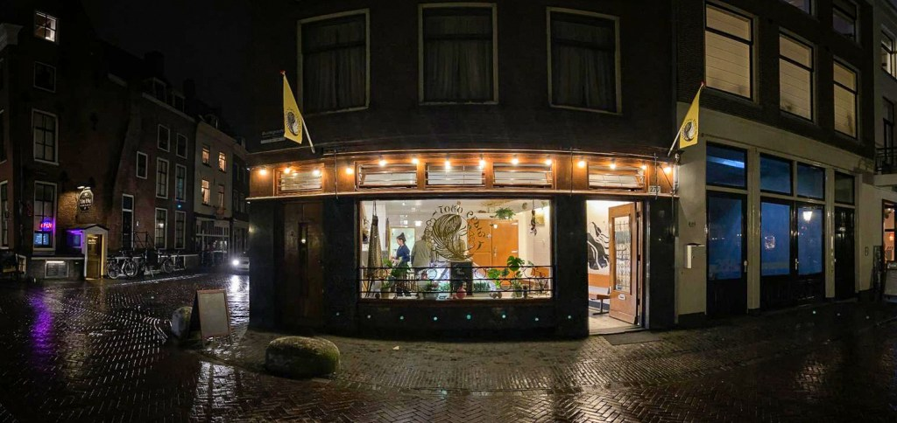
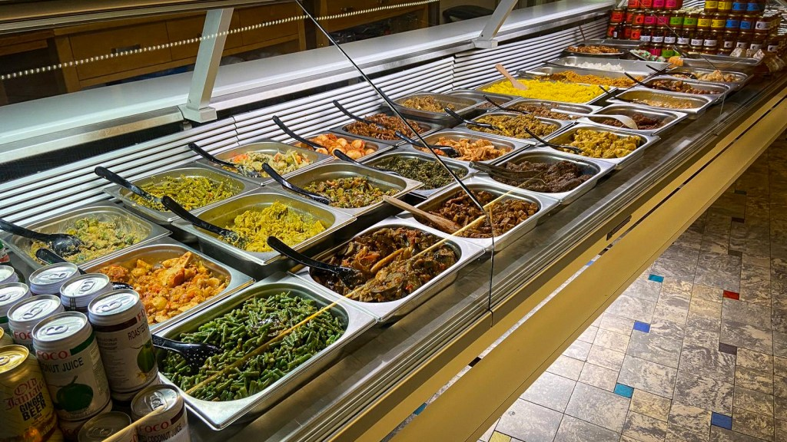
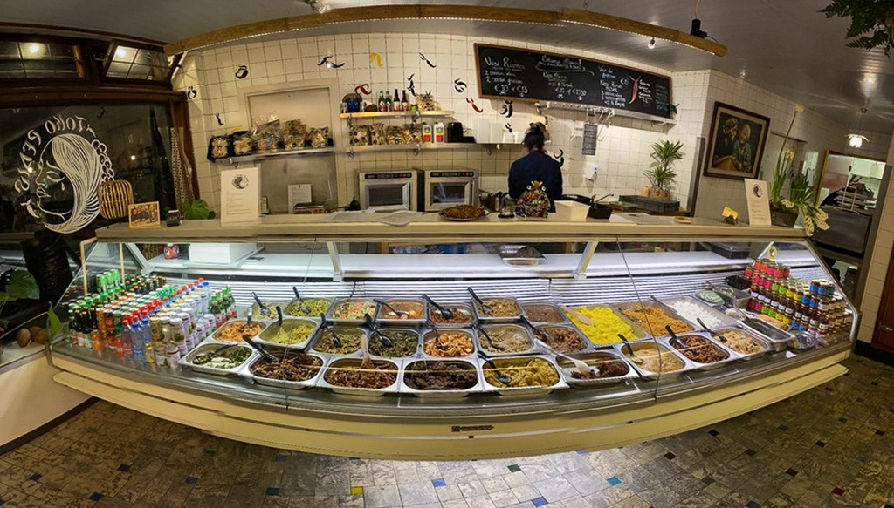
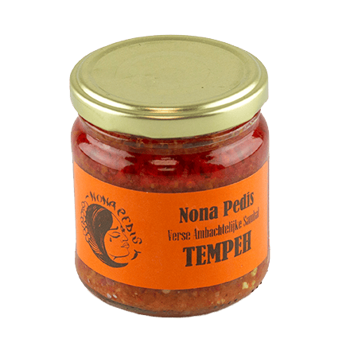
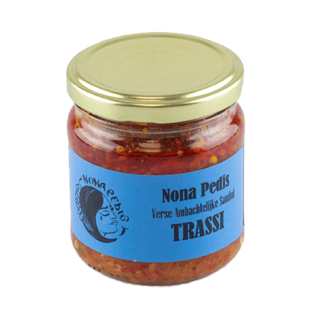

Oudegracht 277, Utrecht
Toko Pedis
De heerlijkste Indische maaltijden in het hartje van Utrecht. Vers bereid, uit de vitrine, om mee te nemen.
Woensdag t/m zondag open vanaf 15:00 of 16:00
Bestellen gaat aan de vitrine. Wij nemen telefonisch geen bestellingen op.

Kijk, kies, en neem mee
In de vitrine staan de gerechten van de dag, van rendang en ayam opor tot sayur lodeh en nasi kuning. U kiest aan de vitrine wat u wilt en neemt het warm mee naar huis.
Onze gerechten worden vers bereid. Daarnaast streven wij naar creativiteit binnen ons aanbod en bieden daarom wisselende gerechten aan. Het kan dus voorkomen dat een gerecht van het menu recent vervangen is.
- Vanaf 100 gram los te bestellen
- Veganistisch: alle basis- en vegetarische gerechten, tenzij anders aangegeven
- Dieetwens? Vraag aan de vitrine naar meer informatie

Stel uw rames samen
Een rames is een bord met een basis van rijst of bami, met daarbij een selectie van groente- en vleesgerechten uit de vitrine. Kies hieronder een rames en zie wat erbij hoort.
Rames
Het is altijd mogelijk om uw rames vegetarisch of veganistisch samen te stellen.
Rames Kecil € 10,50
Wat er in de vitrine kan staan
Ons aanbod wisselt. Dit zijn de gerechten van onze menukaart; vraag aan de vitrine wat er vandaag staat.
- Rendang
- Gestoofd rundvlees in kokosmelk met verschillende kruiden en kokosrasp
- Daging Semur
- Zoet gestoofd rundvlees
- Babi Ketjap
- Varkensvlees in zoete ketjapmarinade
- Ayam Ketjap
- Kippendij in ketjap
- Bebek Semur
- Gesmoorde eend
- Ayam Opor
- Kippendijen in een frisse knoflook-sereh boemboe
- Ayam Goreng
- Gebakken kippendijen
- Udang Peteh
- Garnalen in kokosmelk met petehbonen
- Sambal Goreng Udang
- Pittige garnalen
- Sambal Goreng Ikan
- Pittige pluismakreel
vegan Alle vegetarische gerechten zijn veganistisch, tenzij anders aangegeven.
- Sayur Lodeh
- Gemengde groenten in kokossaus
- Brokoli Jambu Mete
- Broccoli met sesam en cashewnoot
- Sambal Goreng Kol Bunga
- Bloemkool in pittige kokossaus met foelie
- Klapperboontjes
- Geblancheerde boontjes met kokosrasp
- Sambal Goreng Boontjes
- Kouseband met extra pit
- Sambal Goreng Terong
- Ovengebakken aubergines in tomatenboemboe
- Rendang Nangka
- Rendang van jackfruit
- Tempeh Goreng
- Gebakken tempeh in zoete kruidige boemboe
- Sambal Goreng Tahu Tempeh Peteh
- Pittige tahu en tempeh met petehbonen
- Sambal Goreng Telor niet vegan
- Ei in lichtpittige zoete saus
- Atjar Ketimun
- Frisse zoetzure komkommers
- Vegan Babi Ketjap
- Seitan in een zoete ketjapmarinade
- Iga Djagung
- Gegrilde maisribbetjes
- Kentang Kuning
- Aromatische aardappel
vegan Alle basisgerechten zijn veganistisch.
- Nasi Kuning
- Gele gekruide rijst gekookt in kokosmelk
- Nasi Putih
- Witte rijst, gekookt
- Bami Goreng
- Gebakken bami met kruiden en verse groenten
Prijslijst
Alles wat aan de vitrine te krijgen is, met de prijzen.
Menu's
- Rames medium€ 14,50
- Rames large€ 18,95
- Rames compleet medium€ 15,50
- Rames compleet large€ 19,50
- Rames Kecil€ 10,50
- Rames Besar€ 19,95
Gerechten los
- Rund, kip of varken per 100 g€ 3,80
- Lam of vis per 100 g€ 4,35
- Tempeh of tahu per 100 g€ 3,30
- Groentegerechten per 100 g€ 3,00
- Atjar per 100 g€ 2,00
- Pindasaus per 100 g€ 2,00
Rijst en bami
| klein | medium | groot | |
|---|---|---|---|
| Bami | € 3,75 | € 5,25 | € 6,85 |
| Nasi Kuning | € 3,75 | € 5,25 | € 6,85 |
| Nasi Putih | € 3,25 | € 4,75 | € 6,25 |
Snacks en bijgerechten
- Snacks€ 3,75
- Saté portie van 3 stuks€ 7,50
- Saté los€ 2,75
Kroepoek
- Krupuk Garnaal€ 2,75
- Palembang€ 3,25
- Cassave Opak€ 2,75
- Emping€ 3,75
Zoetigheden
- Kue Dadar€ 3,75
- Pisang Goreng€ 3,75
- Spekkoek stuk€ 3,25
- Spekkoek heel€ 20,00
Drinken
- Fris€ 2,75
- Bintang€ 4,50
- Heineken€ 2,75
- Blond 5,5%€ 5,00
- Witbier en IPA€ 5,00
- Fruited Sour 7%€ 6,00
- Lombok Bock 8%€ 5,75
- Non-alcohol Blond 0,3%€ 4,50
Sambal
- Alle smaken per pot€ 6,25
Tassen
- Tas€ 0,30
- Totebag€ 6,50
Sambal voor thuis
Onze sambals zijn bij ons in de winkel verkrijgbaar, in verschillende smaken. Een pot kost € 6,25. Vraag aan de vitrine welke smaken er op dit moment zijn.


Bezoek de toko
Toko PedisOudegracht 277
3511 NN Utrecht
| Maandag | gesloten |
|---|---|
| Dinsdag | gesloten |
| Woensdag | 16:00 – 19:30 |
| Donderdag | 15:00 – 20:00 |
| Vrijdag | 15:00 – 20:00 |
| Zaterdag | 15:00 – 20:00 |
| Zondag | 16:00 – 19:30 |
Wij zijn op de meeste feestdagen gesloten.
Telefoon030 633 64 68
E-mailinfo@tokopedis.nl
Let op: wij nemen telefonisch geen bestellingen op. U bestelt gewoon aan de vitrine.
Plan uw route